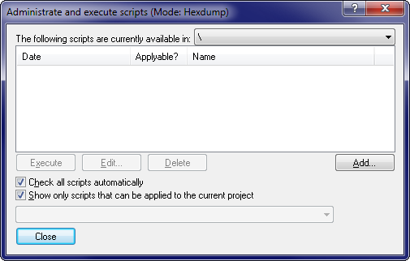

|
The command Scripts (Menu Find) |

  
|
|
The command Scripts (Menu Find) |
|

If you’re doing certain changes again and again because you always get similar ECUs, it can make sense to create a script. This will summarize all changes into a universal format so they can be applied quickly. Furthermore every script recognises whether it can be applied to the current project or not. (If you have many scripts you may delay the recognition to speed this dialog up. Simply turn off the option 'Check automatically'.)
This dialog allows you to execute, edit (a text editor will be started) or delete scripts. Furthermore you may use a subdialog to create new scripts. The combobox in the upper right corner allows you to restrict the search for the right script to a certain subfolder of the script folder.
You may configure the WinOLS options (in the page 'Automatic') in such a way that WinOLS checks after every project import whether a script can be applied to the new project or not.
When the scripts were created a preferred mode (absolute / difference / percent) was defined for transferring the data. Depending on the kind of script you may choose to override this mode when executing the script.
You can find more information about scripts in the respective chapter.
This is just one of several options to import data from other projects.
Tip:
If you use LUA (OLS540), you can use projectImport to apply a script to a project.
Shortcuts
Mouse: -
Keyboard: F8